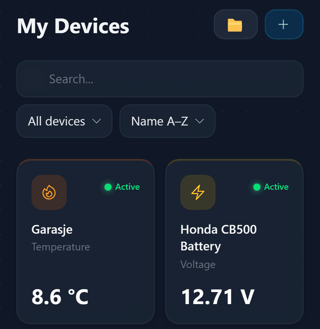
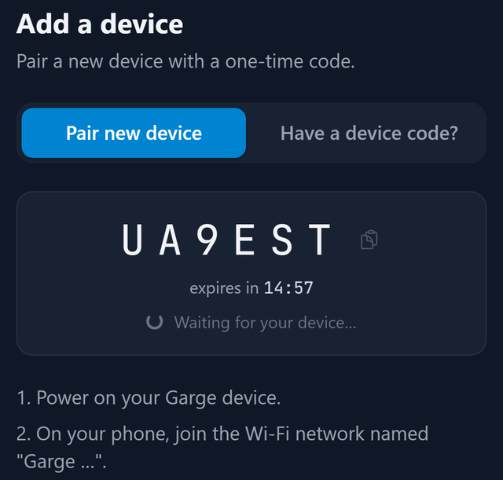
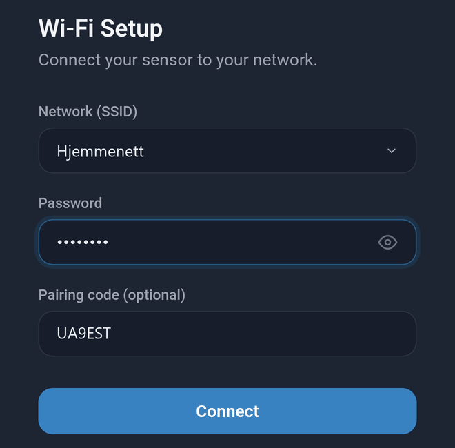

Kom i gang med Garge
Oppsett
- Opprett konto og logg innGå til www.garge.no og trykk på «Create account». Du trenger et aktivt abonnement for å legge til sensorer.
- Hent en pairing codeTrykk på «+ Add device» i «My Devices» og deretter på «Get pairing code». På mobil står det bare «+». Koden har seks tegn og gjelder i 15 minutter. La siden stå åpen.
- Slå på sensoren Garge Sensor: koble til USB-C-strøm. Garge Voltmeter: koble det til SAE-kontakten på 12 V-batteriet. Det blå lyset blinker raskt når sensoren er klar. Hvis ikke, eller hvis sensoren er satt opp fra før, trykker du på Restart-knappen og slipper den. Hold så BOOT-knappen inne med en gang, til lyset blinker raskt. Det kan ta over 5 sekunder. Hvis det ikke blinker raskt, prøver du igjen.
- Koble sensoren til Wi-Fi Koble mobilen til «Garge …» i Wi-Fi-innstillingene, for eksempel «Garge a1b2c3d4e5f6». Oppsettsiden åpner seg. Hvis ikke, går du til 192.168.4.1 i nettleseren. Velg Wi-Fi-nettverket ditt. Skriv inn passordet og pairing code. Trykk på «Connect».
- Gi sensoren et navnGå tilbake til «My Devices». Sensoren dukker opp automatisk innen et par minutter. Last siden på nytt hvis den ikke dukker opp. Gi den et navn, for eksempel «MC-batteri».



Tips og feilsøking
Bytte Wi-Fi-nettverk
Trykk på Restart-knappen og slipp den. Hold så BOOT-knappen inne med en gang, til lyset blinker raskt. Det kan ta over 5 sekunder. Koble mobilen til «Garge …», trykk på «Change Wi-Fi», velg det nye nettverket, skriv inn passordet og trykk på «Connect».
Sensoren dukker ikke opp
Sensoren støtter bare Wi-Fi på 2,4 GHz. Skjulte nettverk vises ikke i listen. Hvis passordet kan være feil: Hent en ny pairing code først, og følg så «Bytte Wi-Fi-nettverk». Skriv inn passordet og koden.
Pairing code har gått ut
Hvis du ser «This pairing code has expired.», trykker du på «Get new code». Den gamle koden slutter da å virke.
Få varsel når sensoren er frakoblet
Gå til «Profile» > «Notifications». Slå på «Offline alerts on this device» og velg antall timer under «Alert after».
Dele sensoren
Gå til «Profile» > «Manage sensors» > «Share». Skriv inn e-postadressen til en annen Garge-bruker. Velg «Read» hvis den andre brukeren bare skal se målingene. Velg «Edit» hvis den andre brukeren også skal kunne lage automatiseringer for stikkontaktene sensoren har funnet. Du deler ett kort om gangen, og en Garge Sensor har to.
Gi sensoren nytt navn
Trykk på sensoren i «My Devices» og trykk deretter på blyanten ved navnet.
Selge eller gi bort sensoren
Gå til «Profile» > «Manage sensors» og trykk på «Remove from account» på alle kortene. Blir ett stående, får den nye eieren bare deler av sensoren, og du beholder tilgang til resten. Den nye eieren følger oppsettet fra steg 1 og trykker på «Change Wi-Fi» på «Pair device». Den nye eieren ser ikke målingene dine.
Garge Voltmeter reagerer ikke
Voltmeteret sover mellom målingene og reagerer da ikke på BOOT-knappen. Trykk på Restart-knappen for å vekke det.